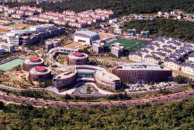
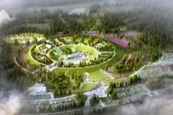
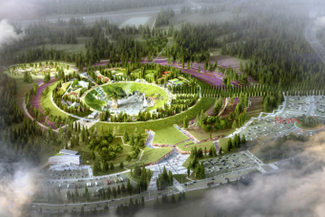
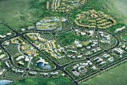

Free International City
- Home
- General Status
- Administration · Economy
- Free International City
Jeju Free International City
What is a Free International City?
The term “free international city” refers to a regional unit in which deregulation and international standards will be applied in order to ensure the international movement of people, commodities, and capital as well as maximal convenience in business activities.
- Article 2 (Definition) of the Special Act on the Establishment of Jeju Special Self-Governing Province and the Development of the Free International City
Jeju has several strengths as a result of its geopolitical location close to major Northeast Asian countries such as China, Taiwan, Hong Kong, Russia, and Japan in addition to the Korean peninsula itself, as well as from its pristine natural environment and beautiful natural landscapes, all of which allow for excellent tourism infrastructure. In addition, due to its remote location, the island is well positioned for application of special acts and has been considered an ideal place to develop a free international city in Korea.
As such, the Korean government announced its Free International City Initiative in 1998 and designated Jeju as a free international city in 2002.
Jeju Free International City has been developed not only as a strategic foothold for securing national competitiveness by ensuring the international movement of people, commodities, and capital as well as maximal convenience in business activities, but also as part of Jeju’s master plan to become a hub city of Northeast Asia in the 21st century.
History
-
2017
- Mar - The Revised 2nd Comprehensive Plan for Jeju Free International City announced
-
2012
- Apr - Construction of Jeju Healthcare Town commenced
- Jan - The 2nd Comprehensive Plan for Jeju Free International City confirmed and announced
-
2010
- Mar - Jeju Science Park completed
-
2009
- June - Construction of Jeju Myths and History Theme Park commenced
-
2007
- Dec - Construction of Jeju Myths and History Theme Park commenced
-
2003
- Feb - The Comprehensive Plan for Jeju Free International City announced
-
2002
- May - Jeju Free International City Development Center (JDC) was established as an exclusive organization for supporting the central government’s Jeju Free International City initiative (under the Ministry of Land, Infrastructure and Transport)
- Apr - The Enforcement Ordinance of the Special Act on Jeju Free International City was revised and enacted to lay the legal foundation for free international cities.
- Jan - The Special Act on Jeju-do Development was revised into the Special Act on Jeju Free International City which was proclaimed in April 2002.
-
1999
- Sep - A feasibility study for Jeju Free International City was conducted by American commercial real estate services company Jones Lang LaSalle from September 1999 to June 2000, under the supervision of the Ministry of Construction and Transportation
-
1998
- Sep - During his inspection visit to Jeju, then-President Kim Dae-jung announced the Free International City initiative to develop Jeju into a multi-functional city for tourism, high-tech knowledge industry, logistics, finance, etc. by making the most use of the characteristics and potential of Jeju.
Main Institutions
| Free movement of people | Free movement of commodities | Free movement of capital |
|---|---|---|
| No-visa policy, permission of long-term residence for foreigners, streamlining of immigration procedure, etc. | Alleviation of trade barriers such as import liberalization and a duty-free policy | Liberalization of foreign exchange transactions, etc. |
Major Projects
Projects laying the foundation for nurturing industries—including tourism, education, healthcare, clean and high-tech—into future core industries of Jeju and attracting investment.-

 Jeju Science Park
Jeju Science Park
-

 Jeju Global Education City
Jeju Global Education City
-
  Jeju Myths and History Theme Park
-

 Healthcare Town
Healthcare Town